(Phiên bản update 23/07/2022)
Phần mềm ECUS5VNACCS2018 - Ngày phát hành 01/08/2022
Phiên bản cập nhật ngày 23/07/2022 được phát hành ngày 01/08/2022 bổ sung một số chức năng tiện ích đáng chú ý nhằm hỗ trợ tối đa cho doanh nghiệp và nâng cao chất lượng dịch vụ, cụ thể như phần giới thiệu và hướng dẫn dưới đây.
I - CHỨC NĂNG HÓA ĐƠN ĐIỆN TỬ TÍCH HỢP
- 1. Giới thiệu chức năng
- Giảm tải cho người kê khai Hải quan và bộ phận kế toán do không phải thực hiện bước nhập dữ liệu hóa đơn thủ công.
- Đảm bảo tính chính xác về mặt số liệu, các thông tin được lấy từ tờ khai xuất khẩu.
- Kết nối linh hoạt đến hệ thống hóa đơn thông qua địa chỉ service.
- Bước 1: Thiết lập thông số kết nối, tích hợp hóa đơn điện tử.
- Bước 2: Tạo và khai báo tờ khai xuất khẩu.
- Bước 3: Tạo hóa đơn, phiếu xuất nội bộ và gửi sang hệ thống hóa đơn e-invoice.
- Bước 4: Người dùng trên hệ thống hóa đơn e-invoice kiểm tra thông tin hóa đơn đã được đồng bộ để thực hiện việc xuất hóa đơn, ký số và gửi đến cơ quan thuế.
- 2. Cơ sở hình thành chức năng
- 3. Hướng dẫn chi tiết các bước thực hiện
- 4. Các thông tin lưu ý
- Chức năng hóa đơn điện tử tích hợp có cả bản thủ công và bản tự động hoàn toàn
- Sau khi tạo dữ liệu hóa đơn trên phần mềm ECUS5VNACCS, dữ liệu sẽ được đẩy về hệ thống hóa đơn điện tử e-invoice (phiên bản Web) của doanh nghiệp - sản phẩm hóa đơn điện tử của công ty Thái Sơn phát hành.
- Nếu doanh nghiệp đang sử dụng hệ thống hóa đơn điện tử khác với e-invoice và vẫn muốn dữ liệu hóa đơn trên phần mềm ECUS đồng bộ về hệ thống hóa đơn hiện tại của doanh nghiệp, doanh nghiệp vui lòng liên hệ để Công ty Thái Sơn tiến hành trao đổi, khảo sát thực tế hệ thống.
- Miền Bắc: 19004767
- Miền Trung - Nam: 19004768
Chức năng hóa đơn tích hợp trên phần mềm ECUS5VNACCS hỗ trợ doanh nghiệp tạo dữ liệu Hóa đơn GTGT, Phiếu xuất kho nội bộ hoặc Hóa đơn bán hàng vào khu Phi thuế quan từ thông tin tờ khai xuất khẩu và gửi trực tiếp tới hệ thống hóa đơn e-invoice để ký số, xuất hóa đơn thông qua một Service. Đồng thời, chức năng giúp doanh nghiệp:
Các bước thực hiện đơn giản, bao gồm các bước sau đây:
Sơ đồ hoạt động hệ thống:

Căn cứ theo quy định tại điểm b, điểm c, khoản 3, Điều 13, Nghị định 123/NĐ-CP của chính phủ về việc áp dụng hóa đơn điện tử, phiếu xuất kho kiêm vận chuyển nội bộ, phiếu xuất kho hàng gửi bán đại lý đối với một số trường hợp cụ thể theo yêu cầu quản lý.
Công văn số 2054/TCHQ-GSQL ngày 03 tháng 06 năm 2022 của Tổng cục Hải quan về việc hướng dẫn sử dụng và thời điểm xuất hóa đơn điện tử cho hàng hóa xuất khẩu.
Như vậy chức năng tích hợp hóa đơn điện tử được tạo ra nhằm hỗ trợ doanh nghiệp xuất nhập khẩu trong việc tạo lập dữ liệu hóa đơn điện tử cho tờ khai xuất khẩu. Sau đó dữ liệu hóa đơn sẽ được đồng bộ sang hệ thống hóa đơn để xuất, ký số và gửi đến cơ quan thuế. Doanh nghiệp sẽ giảm tải được khâu nhập dữ liệu hóa đơn thủ công.
Bước 1: Thiết lập thông số kết nối, tích hợp hóa đơn điện tử
Bước này nhằm thiết lập service kết nối đến hệ thống hóa đơn e-invoice của doanh nghiệp. Để thực hiện bạn truy cập menu Hệ thống /Thiết lập thông số chương trình sau đó chọn mục Tích hợp hóa đơn điện tử:
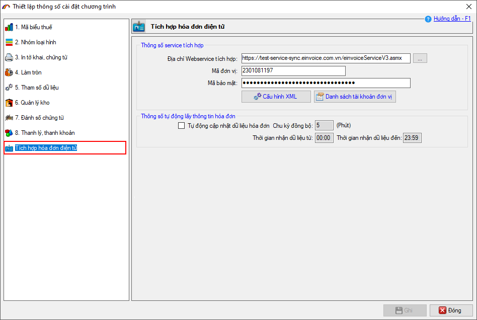
Tiến hành thiết lập từng mục cụ thể dưới đây.
a) Thông số Service tích hợp: Các thông số này do hệ thống hóa đơn e-invoice của đơn vị cung cấp bao gồm các thông tin: Địa chỉ webservice, Mã đơn vị, Mã bảo mật.
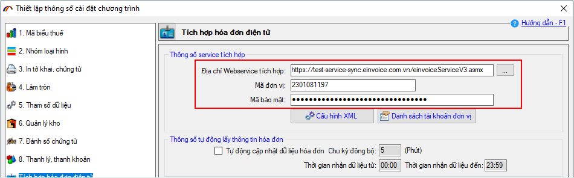
b) Cấu hình XML
Chức năng này dùng để cấu hình trường dữ liệu tương ứng từ tờ khai ECUS với bảng DHOADON cho 3 loại hóa đơn GTGT, hóa đơn phi thuế quan và phiếu xuất kho nội bộ.
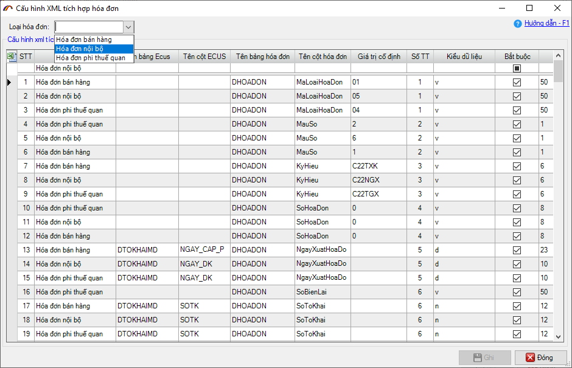
Các thông số đã được thiết lập sẵn, doanh nghiệp chỉ cần cấu hình lại thông tin mẫu số hóa đơn cho phù hợp với mẫu của doanh nghiệp đang sử dụng.
Để thiết lập cho loại hóa đơn nào thì bạn chọn trong danh sách loại hóa đơn, sau đó tìm kiếm các cột cần thiết lập (ví dụ tìm kiếm cột Ký hiệu hóa đơn GTGT):
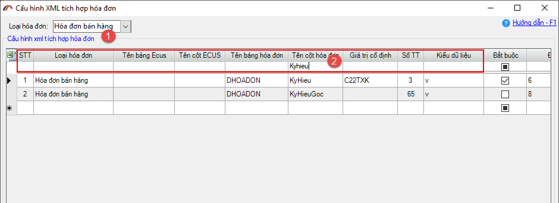
Sau khi thiết lập xong cho mỗi loại hóa đơn bạn nhấn nút Ghi để lưu lại.
c) Thông số tự động lấy thông tin hóa đơn
Mục này dùng để thiết lập thời gian phần mềm tự động lấy thông tin hóa đơn đã xuất từ hệ thống hóa đơn và cập nhật về phần mềm ECUS. Để thiết lập bạn đánh dấu tích chọn vào mục Tự động cập nhật dữ liệu hóa đơn, sau đó nhập vào số phút và khung thời gian thực hiện.
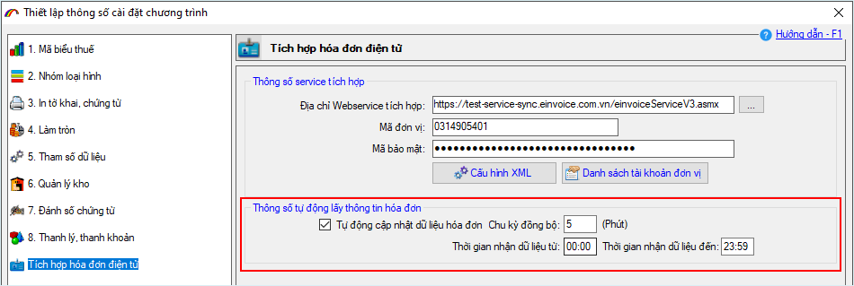
d) Thiết lập thông số tích hợp hóa đơn cho khách hàng (Đối với đại lý).
Đối với trường hợp đại lý khai báo cho nhiều doanh nghiệp khác nhau, muốn cấu hình thông số tích hợp hóa đơn điện tử cho các doanh nghiệp bạn nhấn vào nút Danh sách tài khoản đơn vị để thực hiện.
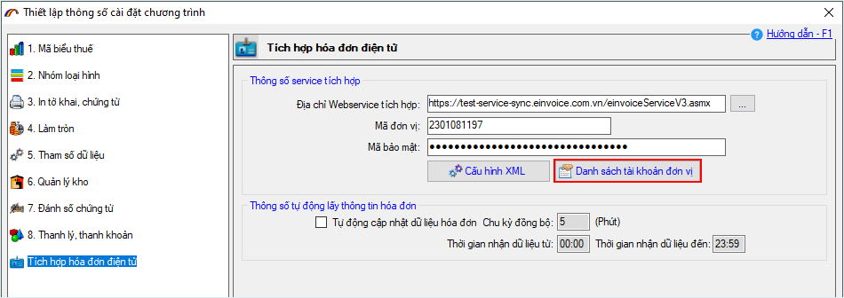
Tại màn hình danh sách tài khoản, bạn nhấn vào nút Thêm mới:
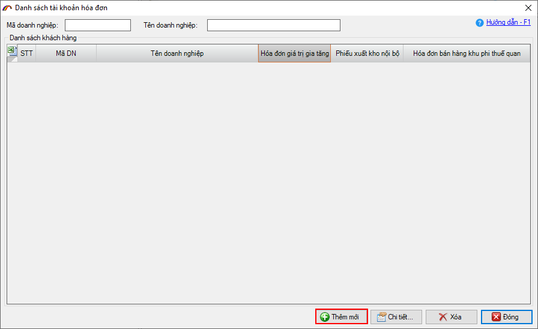
Màn hình thiết lập sẽ hiện ra như sau:
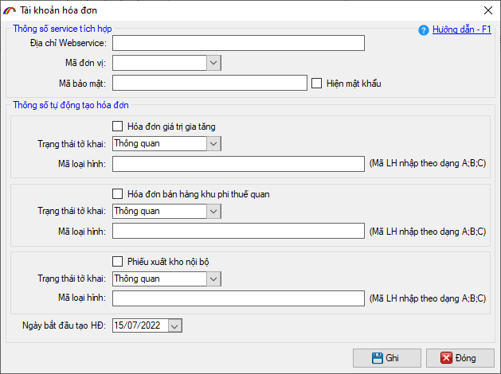
Tại đây bạn chọn khách hàng cần thiết lập sau đó nhập thông tin địa chỉ service, mã bảo mật do khách hàng cung cấp. Đồng thời đánh dấu tích chọn vào loại hóa đơn khách hàng sử dụng.
Bước 2: Tạo và khai báo tờ khai xuất khẩu.
Ở bước này, người dùng thực hiện việc tạo và khai báo tờ khai xuất khẩu trên phần mềm ECUS5VNACCS theo quy trình đến khi tờ khai được chấp nhận thông quan.
Bước 3: Tạo hóa đơn, phiếu xuất nội bộ.
Để tạo hóa đơn, phiếu xuất nội bộ để gửi sang hệ thống hóa đơn, doanh nghiệp truy cập menu Hóa đơn/Danh sách hóa đơn tờ khai (Hoặc danh sách phiếu xuất kho nội bộ, hóa đơn bán hàng khu phi thuế quan) để thực hiện:
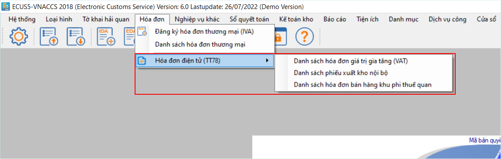
Trong danh sách hiện ra, doanh nghiệp nhấn nút Tạo mới hóa đơn từ tờ khai để tạo hóa đơn:
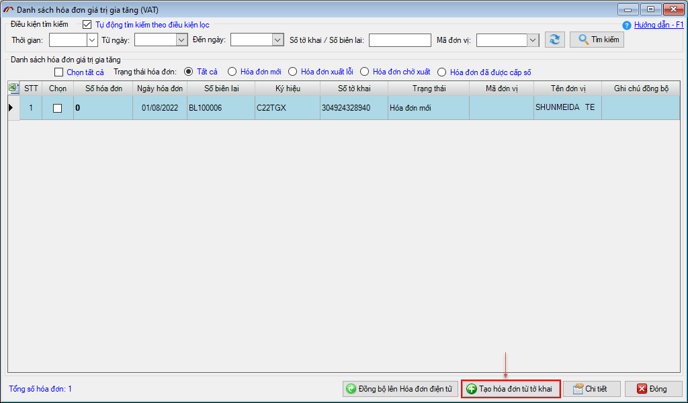
Tiến hành chọn tờ khai xuất muốn tạo hóa đơn, bạn có thể chọn nhiều tờ khai xuất để tạo nhiều hóa đơn cùng 1 lần:
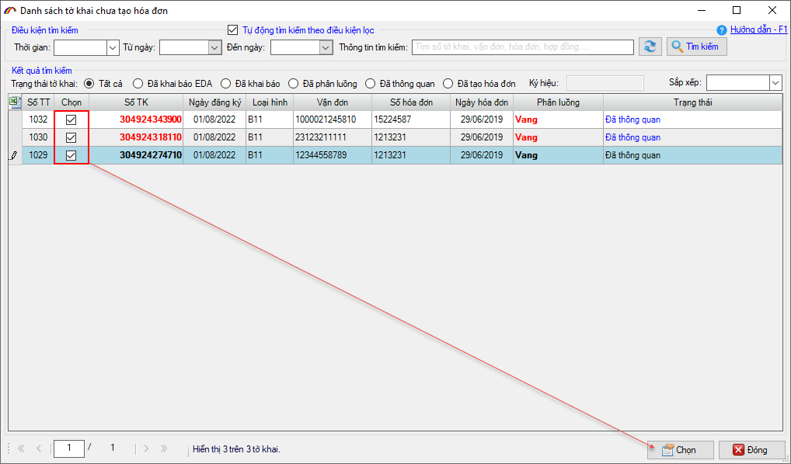
Nhấn nút Chọn, phần mềm sẽ tự tạo dữ liệu hóa đơn, các thông tin bên mua và danh sách hàng hóa được lấy từ tờ khai xuất khẩu đã chọn:
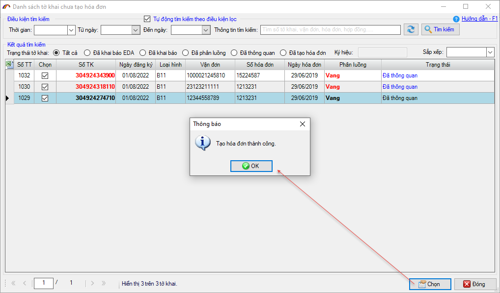
Trạng thái hóa đơn lúc này đang là Hóa đơn mới, ngày hóa đơn được phần mềm lấy là ngày thông quan tờ khai.
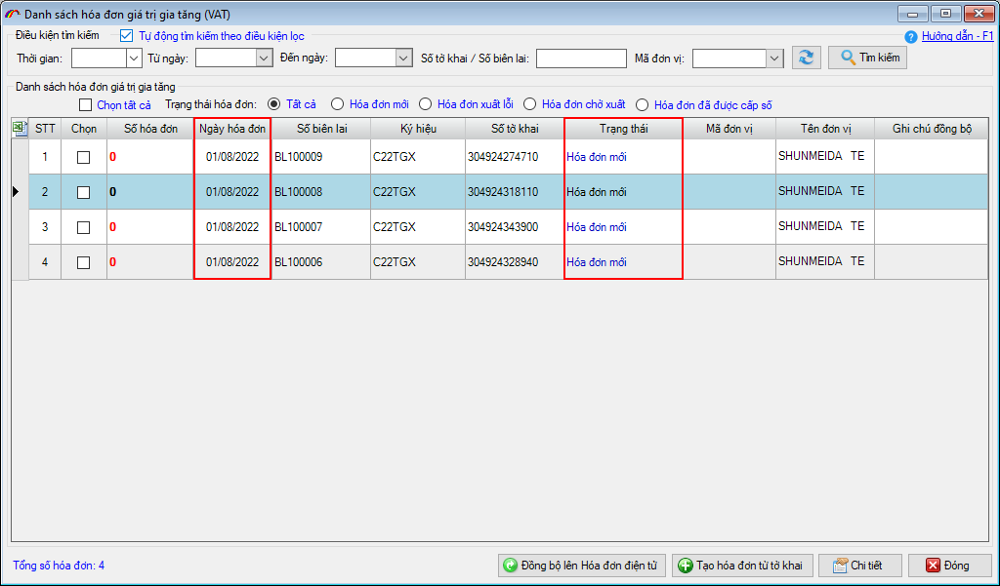
Bạn cần nhấn chi tiết từng hóa đơn để kiểm tra và bổ sung thông tin nếu cần thiết. Sau đó nhấn nút Tạo hóa đơn đơn VAT để xác nhận tạo hóa đơn và đồng bộ sang hệ thống hóa đơn e-invoice (Sau khi tạo hóa đơn thành công, trạng thái hóa đơn sẽ là Hóa đơn chờ xuất):
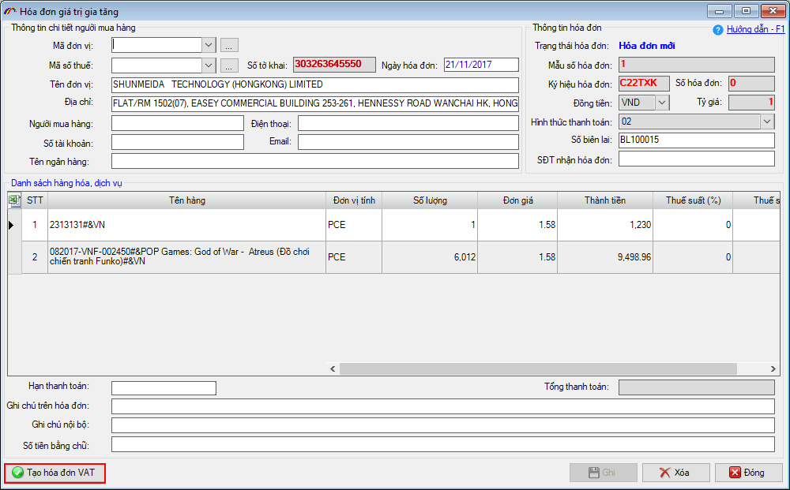
Đối với hóa đơn bán hàng vào khu phi thuế quan và phiếu xuất nội bộ bạn cũng thực hiện tương tự.
Bước 4: Kiểm tra thông tin và xuất hóa đơn.
Người dùng trên hệ thống hóa đơn e-invoice của doanh nghiệp đăng nhập vào hệ thống, để kiểm tra danh sách hóa đơn đã được tạo và đồng bộ sang từ phần mềm ECUS với trạng thái “Hóa đơn chờ xuất”. Sau đó tiến hành xuất hóa đơn, ký số hóa đơn theo nghiệp vụ hóa đơn thông thường.
Thông tin hóa đơn sau khi xuất cũng sẽ được cập nhật tự động về phần mềm ECUS để người dùng theo dõi.
Để biết thêm thông tin chi tiết và đăng ký sử dụng chức năng HÓA ĐƠN ĐIỆN TỬ TÍCH HỢP
Doanh nghiệp vui lòng liên hệ Bộ phận kinh doanh hoặc Trung tâm hỗ trợ khách hàng CÔNG TY PHÁT TRIỂN CÔNG NGHỆ THÁI SƠN trên toàn quốc
HOTLINE:
II - CHUYỂN ĐỔI HỆ THỐNG TRÌNH KÝ SANG ECUSSIGN PRO
Từ 01/08/2022-31/08/2022 Thái sơn sẽ thực hiện chuyển đổi các tài khoản trình ký thông thường lên hệ thống trình ký Pro (hoàn toàn miễn phí), nhằm đảm bảo nâng cao chất lượng dịch vụ.
Bản quyền © thuộc về Công ty TNHH Phát triển công nghệ Thái Sơn